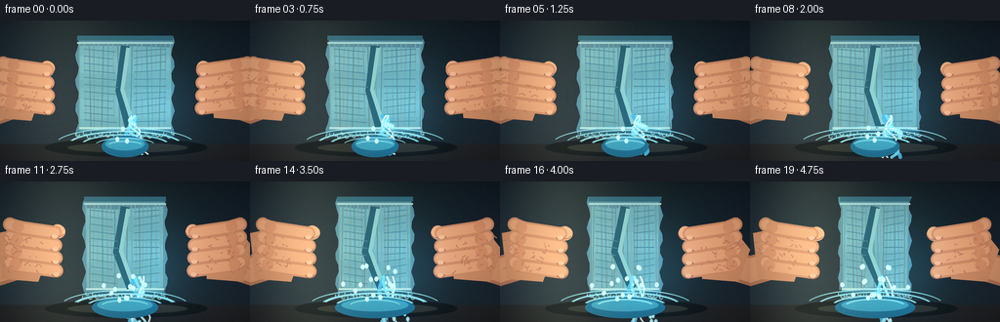
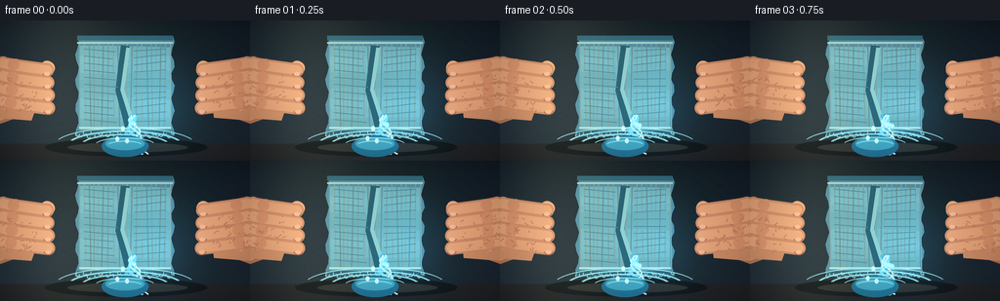
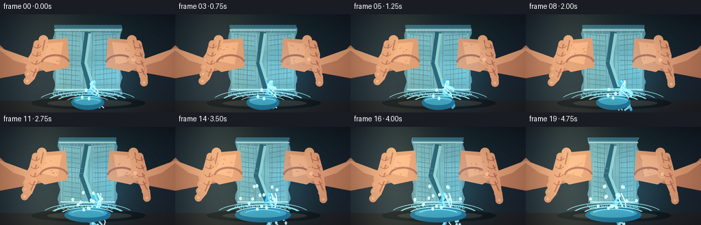
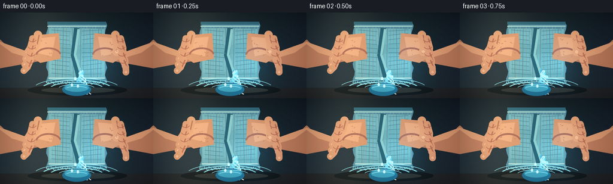
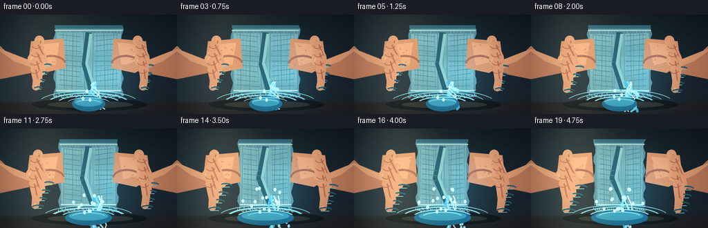
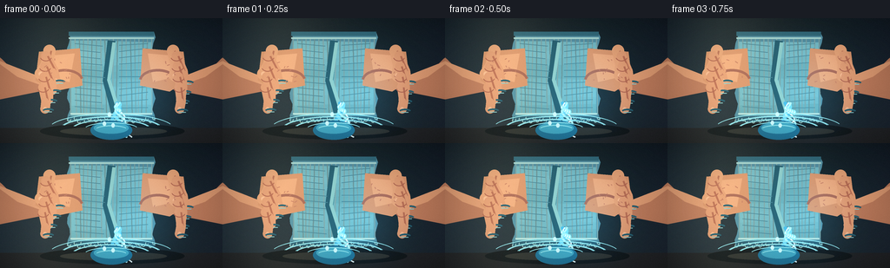

CODING AGENTS AS PIXEL WORLD MODELS
traex/DeepSeek-V4.1-Flash · phygen_012
点击播放 · 原生 RGB 像素
逐轮保存的候选
回放视频、检查图与代码变化。
每份候选均可单独播放。实际图片检查记录在下方工具轨迹中。
候选 01播放与检查图
点击播放 · 原生 RGB 像素


展开代码变化
--- 上一保存版本
+++ 本次保存版本
@@ -0,0 +1,321 @@
+from pathlib import Path
+
+import numpy as np
+from PIL import Image, ImageDraw, ImageFilter
+
+from artifact_io import save
+
+
+CASE_DIR = Path(__file__).resolve().parent
+W, H, N, FPS = 256, 144, 20, 4
+S = 4
+RW, RH = W * S, H * S
+
+
+def smoothstep(a, b, x):
+ t = np.clip((x - a) / (b - a), 0.0, 1.0)
+ return t * t * (3.0 - 2.0 * t)
+
+
+def rounded_line(draw, points, fill, width):
+ draw.line(points, fill=fill, width=int(width), joint="curve")
+ radius = int(width / 2)
+ for x, y in points:
+ draw.ellipse((x - radius, y - radius, x + radius, y + radius), fill=fill)
+
+
+def bezier(p0, p1, p2, p3, n=24):
+ t = np.linspace(0.0, 1.0, n)[:, None]
+ pts = (
+ (1 - t) ** 3 * p0
+ + 3 * (1 - t) ** 2 * t * p1
+ + 3 * (1 - t) * t**2 * p2
+ + t**3 * p3
+ )
+ return [tuple(map(float, p)) for p in pts]
+
+
+def poly_from_bezier(p0, p1, p2, p3, n=40):
+ return bezier(np.array(p0), np.array(p1), np.array(p2), np.array(p3), n)
+
+
+def add_grain(arr, rng, strength=3.0):
+ noise = rng.normal(0, strength, arr.shape[:2])[..., None]
+ return np.clip(arr.astype(np.float32) + noise, 0, 255).astype(np.uint8)
+
+
+def draw_cloth(draw, cx, top, bottom, half_w, phase, pressed):
+ """A towel body with folded hems and a compression crease."""
+ left = cx - half_w
+ right = cx + half_w
+ body = []
+ for i in range(17):
+ y = top + (bottom - top) * i / 16
+ wobble = 2.0 * np.sin(i * 1.5 + phase) * S
+ body.append((left + wobble, y))
+ for i in range(17):
+ y = bottom - (bottom - top) * i / 16
+ wobble = 2.0 * np.sin(i * 1.7 + phase + 1.0) * S
+ body.append((right + wobble, y))
+ draw.polygon(body, fill=(82, 137, 151))
+
+ # Broad fabric planes, stitched in slightly irregular bands.
+ for i in range(9):
+ y0 = top + 10 * S + i * (bottom - top - 20 * S) / 9
+ y1 = y0 + (bottom - top) / 9
+ shade = 7 * np.sin(i * 1.23 + phase)
+ color = tuple(np.clip(np.array((109, 172, 178)) + shade, 0, 255).astype(int))
+ pts = [
+ (left + 3 * S, y0 + 2 * S * np.sin(phase + i)),
+ (cx - 11 * S, y0 + 3 * S * np.sin(phase * 0.7 + i * 0.8)),
+ (right - 3 * S, y0 + 2 * S * np.sin(phase + i + 1)),
+ (right - 3 * S, y1 + 2 * S * np.sin(phase + i + 1)),
+ (cx + 10 * S, y1 + 3 * S * np.sin(phase * 0.7 + i * 0.8 + 1)),
+ (left + 3 * S, y1 + 2 * S * np.sin(phase + i)),
+ ]
+ draw.polygon(pts, fill=color)
+
+ # Vertical pile texture.
+ for i in range(20):
+ x = left + (i + 0.5) * (2 * half_w) / 20
+ tone = 150 + int(13 * np.sin(i * 2.1 + phase))
+ draw.line(
+ [(x, top + 7 * S), (x + 2 * S * np.sin(i + phase), bottom - 7 * S)],
+ fill=(tone - 35, tone, tone - 2),
+ width=max(1, int(1.4 * S)),
+ )
+
+ # Thick seamed hems.
+ draw.line([(left, top + 2 * S), (right, top + 2 * S)], fill=(51, 103, 117), width=5 * S)
+ draw.line([(left, top + 7 * S), (right, top + 7 * S)], fill=(164, 207, 198), width=2 * S)
+ draw.line([(left, bottom - 2 * S), (right, bottom - 2 * S)], fill=(44, 91, 108), width=6 * S)
+ draw.line([(left + 2 * S, bottom - 8 * S), (right - 2 * S, bottom - 8 * S)], fill=(179, 216, 205), width=2 * S)
+
+ # The squeeze fold: a dark central valley, highlighted shoulders.
+ pinch = 12 * S + pressed * 10 * S
+ draw.line(
+ [(cx, top + 10 * S), (cx - pinch * 0.45, top + (bottom - top) * 0.55),
+ (cx + pinch * 0.35, bottom - 9 * S)],
+ fill=(38, 90, 104), width=9 * S, joint="curve",
+ )
+ draw.line(
+ [(cx + 3 * S, top + 12 * S), (cx - pinch * 0.25, top + (bottom - top) * 0.54),
+ (cx + 8 * S, bottom - 12 * S)],
+ fill=(139, 195, 188), width=4 * S, joint="curve",
+ )
+ for i in range(11):
+ y = top + (bottom - top) * (0.13 + i * 0.071)
+ draw.line(
+ [(left + 7 * S, y), (cx - 10 * S - 3 * S * np.sin(i), y + 3 * S)],
+ fill=(72, 128, 140), width=1 * S,
+ )
+ draw.line(
+ [(cx + 9 * S, y + 2 * S), (right - 7 * S, y - 2 * S * np.sin(i))],
+ fill=(73, 129, 140), width=1 * S,
+ )
+
+ # Frayed terry loops along the lower edge.
+ for i in range(26):
+ x = left + i * 2 * half_w / 25
+ y = bottom - 1 * S + 2 * S * np.sin(i * 2.7 + phase)
+ draw.arc((x - 2 * S, y - 2 * S, x + 2 * S, y + 2 * S), 10, 230, fill=(155, 196, 185), width=1 * S)
+
+
+def draw_hand(draw, side, cx, cy, pressure, phase, rng):
+ """Draw an articulated hand gripping from the left or right edge."""
+ sign = -1 if side == "left" else 1
+ x_edge = -18 * S if side == "left" else RW + 18 * S
+ wrist = (x_edge, cy + 32 * S)
+ palm = (cx + sign * 22 * S, cy + 8 * S)
+
+ # Forearm and wrist.
+ rounded_line(draw, [wrist, (palm[0] - sign * 18 * S, palm[1] + 5 * S)], (181, 116, 84), 30 * S)
+ rounded_line(draw, [wrist, (palm[0] - sign * 17 * S, palm[1] + 4 * S)], (216, 148, 106), 24 * S)
+
+ # Palm with pressure-dependent creases.
+ px, py = palm
+ palm_pts = [
+ (px - 26 * S, py - 20 * S),
+ (px + 9 * S, py - 27 * S),
+ (px + 28 * S, py - 3 * S),
+ (px + 16 * S, py + 30 * S),
+ (px - 21 * S, py + 27 * S),
+ ]
+ draw.polygon(palm_pts, fill=(208, 140, 99))
+ draw.polygon(
+ [(px - 18 * S, py - 14 * S), (px + 5 * S, py - 21 * S),
+ (px + 19 * S, py - 1 * S), (px + 7 * S, py + 20 * S),
+ (px - 13 * S, py + 18 * S)],
+ fill=(230, 164, 119),
+ )
+ for i in range(3):
+ yy = py + (i - 1) * 9 * S
+ draw.arc(
+ (px - 16 * S, yy - 8 * S, px + 9 * S, yy + 9 * S),
+ 195, 350, fill=(180, 108, 80), width=2 * S,
+ )
+
+ # Thumb crosses the towel from the upper side.
+ thumb_base = (px + sign * 2 * S, py - 17 * S)
+ thumb_tip = (cx - sign * (10 * S + 7 * S * pressure), cy - (17 * S - pressure * 5 * S))
+ rounded_line(draw, [thumb_base, (thumb_tip[0] + sign * 8 * S, thumb_tip[1] + 3 * S), thumb_tip],
+ (224, 155, 111), 13 * S)
+ draw.ellipse((thumb_tip[0] - 7 * S, thumb_tip[1] - 6 * S,
+ thumb_tip[0] + 8 * S, thumb_tip[1] + 8 * S), fill=(236, 170, 123))
+ draw.arc((thumb_tip[0] - 7 * S, thumb_tip[1] - 3 * S,
+ thumb_tip[0] + 7 * S, thumb_tip[1] + 7 * S), 20, 180, fill=(180, 107, 82), width=1 * S)
+
+ # Four fingers wrap down across the front of the cloth.
+ for i in range(4):
+ fy = cy - 21 * S + i * 13 * S
+ reach = (46 + 9 * pressure + i * 2) * S
+ bend = (5 + 3 * pressure) * S
+ start = (px + sign * 13 * S, fy)
+ mid = (cx + sign * (reach * 0.48), fy + bend * 0.5)
+ end = (cx - sign * (reach * 0.22), fy + bend + 2 * S)
+ rounded_line(draw, [start, mid, end], (207, 137, 98), 14 * S)
+ rounded_line(draw, [start, mid, end], (230, 161, 116), 10 * S)
+ knuckle = (mid[0] + sign * 2 * S, mid[1] - 1 * S)
+ draw.ellipse(
+ (knuckle[0] - 6 * S, knuckle[1] - 6 * S, knuckle[0] + 6 * S, knuckle[1] + 6 * S),
+ fill=(218, 144, 103),
+ )
+ draw.arc(
+ (end[0] - 5 * S, end[1] - 3 * S, end[0] + 5 * S, end[1] + 7 * S),
+ 15, 160, fill=(171, 98, 76), width=1 * S,
+ )
+ # Fingernail, catching a small warm highlight.
+ nx, ny = end
+ draw.ellipse((nx - 3 * S, ny + 2 * S, nx + 3 * S, ny + 6 * S), fill=(240, 180, 139))
+
+ # Fine skin texture and a few short creases.
+ for _ in range(34):
+ x = px + rng.integers(-22, 22) * S
+ y = py + rng.integers(-18, 20) * S
+ draw.line([(x, y), (x + rng.integers(-4, 5) * S, y + rng.integers(1, 4) * S)],
+ fill=(193, 121, 91), width=1 * S)
+
+
+def draw_water_stream(draw, t, pressure, phase, rng):
+ # The stream emerges from the compressed lower center and gains energy.
+ start_x = RW * 0.53 + 6 * S * np.sin(phase * 0.7)
+ start_y = RH * 0.68
+ intensity = smoothstep(0.18, 0.83, pressure)
+ spread = (2.0 + 4.5 * intensity) * S
+ length = (39 + 43 * intensity) * S
+ for band in range(4):
+ pts = []
+ for i in range(18):
+ f = i / 17
+ y = start_y + length * f
+ x = start_x + (band - 1.5) * spread * (0.35 + 0.7 * f)
+ x += (3 + 5 * f) * S * np.sin(f * 10 - phase + band * 1.3)
+ x += 9 * S * f * f * (0.45 + 0.55 * np.sin(phase + band))
+ pts.append((x, y))
+ color = [(74, 178, 211), (113, 211, 229), (177, 236, 236), (231, 249, 243)][band]
+ rounded_line(draw, pts, color, (3.8 - band * 0.7) * S)
+
+ # Droplets leave the main stream as pressure increases.
+ drops = int(6 + 22 * intensity)
+ for i in range(drops):
+ seed = i * 17 + 3
+ f = ((seed * 0.173 + t * (0.8 + intensity)) % 1.0)
+ x = start_x + np.sin(seed * 2.2 + phase) * (14 + 30 * intensity) * S * f
+ y = start_y + (18 + 74 * intensity) * S * f
+ r = (1.0 + 1.5 * f) * S
+ draw.ellipse((x - r, y - r * 1.8, x + r, y + r), fill=(148, 228, 235))
+ draw.ellipse((x - r * 0.55, y - r * 1.25, x + r * 0.25, y + r * 0.4), fill=(232, 252, 248))
+
+ # Impact pool and splash.
+ pool_y = RH - 16 * S
+ pool_w = (48 + 34 * intensity) * S
+ draw.ellipse((RW * 0.5 - pool_w / 2, pool_y - 10 * S,
+ RW * 0.5 + pool_w / 2, pool_y + 12 * S), fill=(32, 111, 143))
+ draw.ellipse((RW * 0.5 - pool_w * 0.42, pool_y - 8 * S,
+ RW * 0.5 + pool_w * 0.42, pool_y + 5 * S), fill=(64, 162, 184))
+ for i in range(7):
+ f = ((i * 0.29 + t * 0.5) % 1.0)
+ rw = (18 + i * 6 + f * 25) * S
+ draw.arc(
+ (RW * 0.5 - rw, pool_y - rw * 0.25, RW * 0.5 + rw, pool_y + rw * 0.25),
+ 200, 340, fill=(146, 224, 226), width=1 * S,
+ )
+ for i in range(int(3 + 14 * intensity)):
+ ang = -2.55 + (i / max(1, int(3 + 14 * intensity))) * 2.0 + 0.2 * np.sin(phase + i)
+ speed = (16 + 25 * intensity) * S * (0.6 + 0.4 * np.sin(i * 2.1))
+ x = RW * 0.5 + np.cos(ang) * speed
+ y = pool_y + np.sin(ang) * speed * 1.1
+ draw.ellipse((x - 2 * S, y - 3 * S, x + 2 * S, y + 2 * S), fill=(202, 242, 239))
+
+
+def render_frame(index, rng):
+ t = index / (N - 1)
+ pressure = smoothstep(0.05, 1.0, t) ** 1.15
+ phase = 0.22 * index
+
+ # Dark studio backdrop, subtly uneven so the material and water separate.
+ yy, xx = np.mgrid[0:RH, 0:RW]
+ backdrop = np.zeros((RH, RW, 3), np.float32)
+ backdrop[..., 0] = 25 + 11 * (yy / RH) + 5 * np.sin(xx / (49 * S))
+ backdrop[..., 1] = 35 + 12 * (yy / RH) + 5 * np.sin(xx / (71 * S) + 0.7)
+ backdrop[..., 2] = 43 + 13 * (yy / RH) + 4 * np.sin(xx / (61 * S) + 1.4)
+ img = Image.fromarray(np.clip(backdrop, 0, 255).astype(np.uint8), "RGB")
+ draw = ImageDraw.Draw(img)
+
+ # Tabletop and soft shadow under the squeezing action.
+ draw.rectangle((0, RH * 0.88, RW, RH), fill=(36, 38, 40))
+ draw.ellipse((RW * 0.18, RH * 0.84, RW * 0.83, RH * 0.97), fill=(19, 24, 27))
+ draw.ellipse((RW * 0.27, RH * 0.87, RW * 0.75, RH * 0.94), fill=(48, 50, 47))
+
+ cloth_top = RH * 0.11
+ cloth_bottom = RH * 0.82
+ half_w = (49 - 13 * pressure) * S
+ cx = RW * 0.5
+ draw_cloth(draw, cx, cloth_top, cloth_bottom, half_w, phase, pressure)
+
+ # Hands close in, then the fingers visibly press into the cloth.
+ hand_cx = cx
+ hand_y = RH * 0.45
+ hand_offset = (112 - 13 * pressure) * S
+ draw_hand(draw, "left", hand_cx - hand_offset + 22 * S, hand_y, pressure, phase, rng)
+ draw_hand(draw, "right", hand_cx + hand_offset - 22 * S, hand_y, pressure, phase + 0.35, rng)
+
+ draw_water_stream(draw, t, pressure, phase, rng)
+
+ # Rim light from upper left and a cool reflected light from the water.
+ arr = np.asarray(img).astype(np.float32)
+ y = np.arange(RH)[:, None]
+ x = np.arange(RW)[None, :]
+ rim = np.exp(-((x - RW * 0.24) ** 2) / (2 * (38 * S) ** 2)) * (0.45 + 0.3 * pressure)
+ arr += rim[..., None] * np.array([38, 42, 31])
+ cool = np.exp(-((x - RW * 0.63) ** 2) / (2 * (28 * S) ** 2)) * np.exp(-((y - RH * 0.62) ** 2) / (2 * (35 * S) ** 2))
+ arr += cool[..., None] * np.array([5, 23, 31])
+ arr = np.clip(arr, 0, 255).astype(np.uint8)
+ img = Image.fromarray(arr)
+
+ # Mild lens softness only at the periphery; the central action stays crisp.
+ blur = img.filter(ImageFilter.GaussianBlur(radius=1.1 * S))
+ vignette = np.clip(
+ 1.08 - 0.42 * (((xx - RW / 2) / (RW * 0.64)) ** 2 + ((yy - RH / 2) / (RH * 0.64)) ** 2),
+ 0.55, 1.0,
+ )
+ arr = np.asarray(img).astype(np.float32) * vignette[..., None] + np.asarray(blur).astype(np.float32) * (1 - vignette[..., None]) * 0.26
+ arr = add_grain(np.clip(arr, 0, 255).astype(np.uint8), rng, 2.2)
+
+ small = np.asarray(Image.fromarray(arr).resize((W, H), Image.Resampling.LANCZOS))
+ # A restrained cool grade keeps the wet highlights luminous.
+ small_f = small.astype(np.float32)
+ small_f[..., 2] *= 1.035
+ small_f[..., 1] *= 1.012
+ return np.clip(small_f, 0, 255).astype(np.uint8)
+
+
+def main():
+ rng = np.random.default_rng(12012)
+ frames = [render_frame(i, rng) for i in range(N)]
+ save(frames, CASE_DIR)
+ print(f"saved {N} frames to {CASE_DIR}")
+
+
+if __name__ == "__main__":
+ main()
候选 02播放与检查图
点击播放 · 原生 RGB 像素


展开代码变化
--- 上一保存版本
+++ 本次保存版本
@@ -188,12 +188,22 @@
nx, ny = end
draw.ellipse((nx - 3 * S, ny + 2 * S, nx + 3 * S, ny + 6 * S), fill=(240, 180, 139))
- # Fine skin texture and a few short creases.
- for _ in range(34):
- x = px + rng.integers(-22, 22) * S
- y = py + rng.integers(-18, 20) * S
- draw.line([(x, y), (x + rng.integers(-4, 5) * S, y + rng.integers(1, 4) * S)],
- fill=(193, 121, 91), width=1 * S)
+
+def draw_finger(draw, x, y, angle, length, width, fill, shade, nail):
+ """A separate bent finger, kept readable against the cloth."""
+ ca, sa = np.cos(angle), np.sin(angle)
+ p0 = (x, y)
+ p1 = (x + ca * length * 0.55, y + sa * length * 0.55)
+ p2 = (x + ca * length * 0.88 - sa * width * 0.28,
+ y + sa * length * 0.88 + ca * width * 0.28)
+ pts = [p0, p1, p2]
+ rounded_line(draw, pts, fill, width)
+ draw.line([(p0[0] + 2 * S, p0[1]), (p1[0] + 2 * S, p1[1])], fill=shade, width=2 * S)
+ # Knuckle and nail are small, deliberate anchors for the eye.
+ draw.ellipse((p1[0] - width * 0.22, p1[1] - width * 0.22,
+ p1[0] + width * 0.22, p1[1] + width * 0.22), fill=fill)
+ draw.ellipse((p2[0] - width * 0.18, p2[1] - width * 0.18,
+ p2[0] + width * 0.18, p2[1] + width * 0.18), fill=nail)
def draw_water_stream(draw, t, pressure, phase, rng):
@@ -248,6 +258,81 @@
draw.ellipse((x - 2 * S, y - 3 * S, x + 2 * S, y + 2 * S), fill=(202, 242, 239))
+def draw_hands(img, pressure, phase, rng):
+ """Draw both hands in layers: forearms, palms, then curled fingers."""
+ draw = ImageDraw.Draw(img)
+ for side, sign in (("left", -1), ("right", 1)):
+ edge_x = -10 * S if side == "left" else RW + 10 * S
+ palm_x = RW * (0.31 if side == "left" else 0.69) + sign * (3 + 4 * pressure) * S
+ palm_y = RH * 0.40
+ shoulder_x = edge_x - sign * 30 * S
+ # Forearm silhouette, broad at the frame edge and tapering into the wrist.
+ forearm = [
+ (shoulder_x, palm_y + 7 * S),
+ (edge_x, palm_y - 22 * S),
+ (edge_x, palm_y + 38 * S),
+ (palm_x + sign * 10 * S, palm_y + 24 * S),
+ ]
+ draw.polygon(forearm, fill=(187, 120, 88))
+ highlight = [
+ (shoulder_x, palm_y + 10 * S),
+ (edge_x, palm_y - 12 * S),
+ (palm_x + sign * 8 * S, palm_y + 16 * S),
+ (palm_x + sign * 13 * S, palm_y + 23 * S),
+ ]
+ draw.polygon(highlight, fill=(219, 151, 109))
+
+ # Palm and heel.
+ px, py = palm_x, palm_y
+ palm_poly = [
+ (px - sign * 22 * S, py - 23 * S),
+ (px + sign * 25 * S, py - 19 * S),
+ (px + sign * 29 * S, py + 14 * S),
+ (px + sign * 9 * S, py + 27 * S),
+ (px - sign * 25 * S, py + 20 * S),
+ ]
+ draw.polygon(palm_poly, fill=(211, 143, 101))
+ draw.polygon(
+ [(px - sign * 16 * S, py - 17 * S), (px + sign * 18 * S, py - 14 * S),
+ (px + sign * 20 * S, py + 9 * S), (px - sign * 10 * S, py + 16 * S)],
+ fill=(230, 162, 117),
+ )
+ # The palm heel catches the cool light.
+ heel_x0, heel_x1 = sorted((px - sign * 26 * S, px + sign * 17 * S))
+ draw.arc((heel_x0, py + 1 * S, heel_x1, py + 27 * S),
+ 185, 350, fill=(165, 100, 80), width=3 * S)
+
+ # Thumb lies across the upper edge of the palm.
+ tx = px + sign * 13 * S
+ ty = py - 20 * S
+ draw_finger(
+ draw, tx, ty, np.pi * 0.50 - sign * 0.22, (32 + 4 * pressure) * S,
+ 14 * S, (224, 156, 111), (181, 109, 81), (242, 178, 136),
+ )
+
+ # Four fingers curl toward the central squeeze.
+ base_x = px + sign * 22 * S
+ for i in range(4):
+ fy = py - 14 * S + i * 12 * S
+ angle = np.pi * 0.50 - sign * (0.26 + 0.05 * i)
+ length = (29 + 10 * pressure - i * 1.7) * S
+ finger_x = base_x + sign * (i * 1.1) * S
+ draw_finger(
+ draw, finger_x, fy, angle, length, 11 * S,
+ (220, 150, 108), (180, 105, 78), (241, 177, 135),
+ )
+ # Knuckle shadow where the finger leaves the palm.
+ draw.arc((finger_x - 7 * S, fy - 5 * S, finger_x + 7 * S, fy + 6 * S),
+ 20, 160, fill=(171, 96, 74), width=1 * S)
+
+ # A few restrained pores and creases keep the skin from looking plastic.
+ for _ in range(10):
+ x = px + rng.integers(-18, 18) * S
+ y = py + rng.integers(-14, 16) * S
+ draw.line([(x, y), (x + rng.integers(-3, 4) * S, y + rng.integers(1, 3) * S)],
+ fill=(191, 120, 92), width=1 * S)
+
+
def render_frame(index, rng):
t = index / (N - 1)
pressure = smoothstep(0.05, 1.0, t) ** 1.15
@@ -274,11 +359,7 @@
draw_cloth(draw, cx, cloth_top, cloth_bottom, half_w, phase, pressure)
# Hands close in, then the fingers visibly press into the cloth.
- hand_cx = cx
- hand_y = RH * 0.45
- hand_offset = (112 - 13 * pressure) * S
- draw_hand(draw, "left", hand_cx - hand_offset + 22 * S, hand_y, pressure, phase, rng)
- draw_hand(draw, "right", hand_cx + hand_offset - 22 * S, hand_y, pressure, phase + 0.35, rng)
+ draw_hands(img, pressure, phase, rng)
draw_water_stream(draw, t, pressure, phase, rng)
候选 03播放与检查图
点击播放 · 原生 RGB 像素


展开代码变化
--- 上一保存版本
+++ 本次保存版本
@@ -263,7 +263,7 @@
draw = ImageDraw.Draw(img)
for side, sign in (("left", -1), ("right", 1)):
edge_x = -10 * S if side == "left" else RW + 10 * S
- palm_x = RW * (0.31 if side == "left" else 0.69) + sign * (3 + 4 * pressure) * S
+ palm_x = RW * (0.285 if side == "left" else 0.715) + sign * (3 + 4 * pressure) * S
palm_y = RH * 0.40
shoulder_x = edge_x - sign * 30 * S
# Forearm silhouette, broad at the frame edge and tapering into the wrist.
@@ -311,15 +311,29 @@
)
# Four fingers curl toward the central squeeze.
- base_x = px + sign * 22 * S
+ base_x = px + sign * 17 * S
for i in range(4):
fy = py - 14 * S + i * 12 * S
- angle = np.pi * 0.50 - sign * (0.26 + 0.05 * i)
- length = (29 + 10 * pressure - i * 1.7) * S
+ angle = np.pi * (0.36 + 0.028 * i) + sign * 0.04
+ length = (34 + 14 * pressure - i * 2.0) * S
finger_x = base_x + sign * (i * 1.1) * S
draw_finger(
draw, finger_x, fy, angle, length, 11 * S,
(220, 150, 108), (180, 105, 78), (241, 177, 135),
+ )
+ # Each fingertip sinks into a shallow cloth dent as pressure rises.
+ tip_x = finger_x + np.cos(angle) * length
+ tip_y = fy + np.sin(angle) * length
+ dent_w = (7 + 4 * pressure) * S
+ dent_h = (3 + 2 * pressure) * S
+ draw.arc(
+ (tip_x - dent_w, tip_y - dent_h, tip_x + dent_w, tip_y + dent_h),
+ 200, 340, fill=(38, 89, 103), width=2 * S,
+ )
+ draw.line(
+ [(tip_x - dent_w * 0.65, tip_y + 1 * S),
+ (tip_x + dent_w * 0.55, tip_y + 1 * S)],
+ fill=(136, 190, 185), width=1 * S,
)
# Knuckle shadow where the finger leaves the palm.
draw.arc((finger_x - 7 * S, fy - 5 * S, finger_x + 7 * S, fy + 6 * S),
可观测工具轨迹
实际执行的命令与返回图片。
命令 1exit 0
/bin/bash -c "pwd && rg --files -g 'prompt.txt' -g 'GENERATION_RULES.md' -g 'task_spec.json' -g '"'!*.mp4'"'"
命令 2exit 0
/bin/bash -c 'git status --short && ls -la'
命令 3exit 0
/bin/bash -c 'cat prompt.txt'
命令 4exit 0
/bin/bash -c 'cat GENERATION_RULES.md'
命令 5exit 0
/bin/bash -c 'cat task_spec.json'
命令 6exit 0
/bin/bash -c "sed -n '1,240p' artifact_io.py && sed -n '1,220p' player_template.html"
命令 7exit 0
/bin/bash -c "command -v ffmpeg || true; command -v convert || true; python - <<'PY'
import numpy, PIL
print('numpy', numpy.__version__)
print('PIL', PIL.__version__)
try:
import scipy
print('scipy', scipy.__version__)
except Exception as e: print('no scipy', e)
PY"命令 8exit 0
/bin/bash -c "find .tmp -maxdepth 2 -type f -printf '%p %s bytes\\n' | head -50"
命令 9exit 0
/bin/bash -c 'python generate.py'
命令 10exit 0
/bin/bash -c "python - <<'PY'
from PIL import Image
im=Image.open('inspection.png')
print(im.size)
im.resize((im.width*2,im.height*2), Image.Resampling.NEAREST).save('.tmp/inspection2x.png')
PY"命令 11exit 0
/bin/bash -c 'command -v chafa || command -v viu || command -v jp2 || command -v img2txt || true'
命令 12exit 0
/bin/bash -c "python - <<'PY'
from PIL import Image
import numpy as np
im=np.array(Image.open('frames/00.png'))
print('frame 0', im.shape, im.min(), im.max(), im.mean(axis=(0,1)))
for i in [0,5,10,15,19]:
a=np.array(Image.open(f'frames/{i:02d}.png')).astype(float)
print(i, 'mean', a.mean(axis=(0,1)).round(1), 'nonbg', ((a[...,1]>65)&(a[...,2]>65)).sum())
PY"命令 13exit 0
/bin/bash -c "python - <<'PY'
from PIL import Image
import numpy as np
chars=' .:-=+*#%@'
for fn in ['frames/00.png','frames/10.png','frames/19.png']:
im=np.array(Image.open(fn).resize((80,45),Image.Resampling.BILINEAR)).astype(float)
print('\\n',fn)
lum=(.2126*im[:,:,0]+.7152*im[:,:,1]+.0722*im[:,:,2])/255
for row in lum:
print(''.join(chars[min(9,int(v*10))] for v in row))
PY"命令 14exit 0
/bin/bash -c "python - <<'PY'
from PIL import Image
import numpy as np
im=np.array(Image.open('frames/19.png').resize((64,36),Image.Resampling.LANCZOS))
for row in im:
s=''
for r,g,b in row:
s += f'\\x1b[48;2;{r};{g};{b}m '
s+='\\x1b[0m'
print(s)
PY"命令 15exit 0
/bin/bash -c "python - <<'PY'
from PIL import Image
for i in [0,19]:
im=Image.open(f'frames/{i:02d}.png')
# summarize in 5 vertical bands, 8 horizontal regions: mean RGB
import numpy as np
a=np.array(im)
print('frame',i)
for y0 in range(0,144,18):
row=[]
for x0 in range(0,256,32):
m=a[y0:y0+18,x0:x0+32].mean((0,1)).astype(int)
row.append('%02x%02x%02x'%tuple(m))
print(' '.join(row))
PY"命令 16exit 0
/bin/bash -c "python - <<'PY'
from PIL import Image
import numpy as np
for i in [0,5,10,15,19]:
a=np.array(Image.open(f'frames/{i:02d}.png')).astype(np.int16)
print(i, 'satmean', (a.max(2)-a.min(2)).mean().round(1), 'p95lum', np.percentile(a.mean(2),95).round(1), 'p99',np.percentile(a.mean(2),99).round(1))
PY"命令 17exit 0
/bin/bash -c "python - <<'PY'
from PIL import Image
import numpy as np
ims=[np.asarray(Image.open(f'frames/{i:02d}.png')).astype(np.float32) for i in range(20)]
for i in range(1,20):
d=np.abs(ims[i]-ims[i-1]).mean()
changed=(np.abs(ims[i]-ims[i-1]).max(2)>8).mean()
print(f'{i:02d}: mad={d:.2f} changed={changed:.3f}')
PY"命令 18exit 1
/bin/bash -c 'python generate.py'
命令 19exit 0
/bin/bash -c 'python generate.py'
命令 20exit 0
/bin/bash -c "python - <<'PY'
from PIL import Image
import numpy as np
chars=' .:-=+*#%@'
for fn in ['frames/00.png','frames/10.png','frames/19.png']:
im=np.array(Image.open(fn).resize((80,45),Image.Resampling.BILINEAR)).astype(float)
lum=(.2126*im[:,:,0]+.7152*im[:,:,1]+.0722*im[:,:,2])/255
print('\\n',fn)
for row in lum:
print(''.join(chars[min(9,int(v*10))] for v in row))
PY"命令 21exit 0
/bin/bash -c "python - <<'PY'
from PIL import Image
import numpy as np
im=np.array(Image.open('frames/19.png')).astype(float)
# Classify broad regions by color. show 128x72 with symbols: S skin, C cloth, W water, b bg, t table.
small=np.array(Image.open('frames/19.png').resize((96,54),Image.Resampling.BILINEAR))
for row in small:
s=''
for r,g,b in row:
if r>125 and r>g*1.16 and r>b*1.25: ch='S'
elif b>g*1.06 and g>70 and b>100: ch='W'
elif g>r*1.15 and b>r*1.25 and g>70: ch='C'
elif r<50 and g<55 and b<60: ch='.'
else: ch=' '
s+=ch
print(s)
PY"命令 22exit 0
/bin/bash -c 'python generate.py'
命令 23exit 0
/bin/bash -c "python - <<'PY'
from PIL import Image
import numpy as np
for i in [0,5,10,15,19]:
a=np.array(Image.open(f'frames/{i:02d}.png')).astype(np.int16)
print(i, 'mean', a.mean((0,1)).round(1), 'sat', (a.max(2)-a.min(2)).mean().round(1))
# More compact color map with skin/cloth/water and a 4-pixel horizontal grid.
a=np.array(Image.open('frames/19.png').resize((64,36),Image.Resampling.BILINEAR))
for row in a:
s=''
for r,g,b in row:
if r>130 and r>g*1.12 and r>b*1.22: ch='S'
elif b>g*1.05 and g>75: ch='W'
elif g>r*1.12 and b>r*1.2 and g>70: ch='C'
elif r<50 and g<55 and b<60: ch='.'
else: ch=' '
s+=ch
print(s)
PY"命令 24exit 0
/bin/bash -c "python - <<'PY' mods=['cv2','imageio','imageio_ffmpeg','av'] for m in mods: try: x=__import__(m) print(m, getattr(x,'__version__','ok')) except Exception as e: print(m, 'missing', type(e).__name__) PY"
命令 25exit 0
/bin/bash -c "python - <<'PY'
import imageio.v3 as iio
import numpy as np
from PIL import Image
frames=[np.asarray(Image.open(f'frames/{i:02d}.png')) for i in range(20)]
iio.imwrite('.tmp/preview.mp4', frames, fps=4, codec='libx264', quality=8)
print('wrote', __import__('os').path.getsize('.tmp/preview.mp4'))
PY"命令 26exit 0
/bin/bash -c "python - <<'PY'
from PIL import Image
import numpy as np
# Print native-resolution classified maps for four key frames, 2 chars per pixel row.
for idx in [0,6,12,19]:
a=np.array(Image.open(f'frames/{idx:02d}.png').resize((128,72),Image.Resampling.BILINEAR))
print('\\nFRAME',idx)
for row in a:
s=''
for r,g,b in row:
if r>135 and r>g*1.10 and r>b*1.18: ch='s'
elif b>g*1.06 and g>75: ch='w'
elif g>r*1.12 and b>r*1.18 and g>70: ch='c'
elif r<47 and g<52 and b<58: ch='.'
else: ch=' '
s+=ch
print(s)
PY"命令 27exit 0
/bin/bash -c 'python -m py_compile generate.py && ls -lh generate.py pixels.npz index.html inspection.png transition_check.png frames/00.png frames/19.png'
命令 28exit 0
/bin/bash -c "python - <<'PY'
import json
from pathlib import Path
import numpy as np
from PIL import Image
z=np.load('pixels.npz')
print('pixels.npz', z['pixels'].shape, z['pixels'].dtype)
files=sorted(Path('frames').glob('*.png'))
print('frames', len(files), Image.open(files[0]).size, Image.open(files[0]).mode)
print('unique frame hashes', len({hash(f.read_bytes()) for f in files}))
html=Path('index.html').read_text()
print('html bytes', len(html), 'ready marker', 'window.__pixelReady=true' in html)
PY"保存候选 3 份；完成命令 28 次；可验证图片返回 0 张。原始 API 响应与完整日志保留在本地。